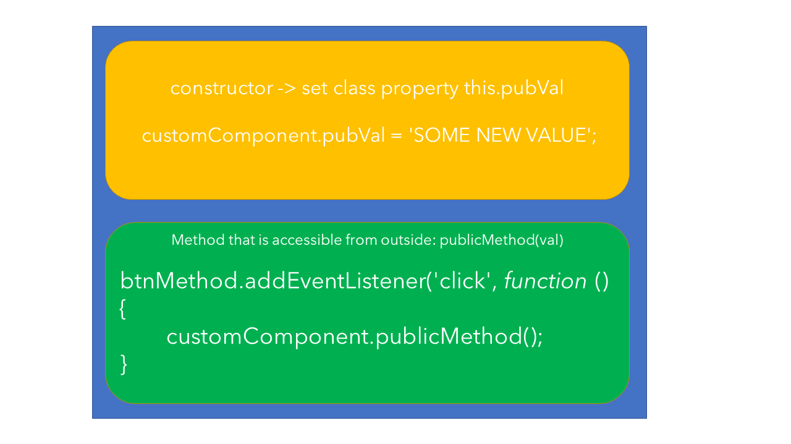

01-light-events
Deleting component in DEV > Elements will show the disconnectCallback().
We can add a page level event like onclick() to the component as in 'CLICK ME'.
JavaScript does not have public and private methods and properties so we can if we want access them.
For components for third party use, we would not advertise this an create interfaces instead.
In page we can get a reference to the component with document.querySelector and then call the public function or set the internal properties. This is an API as it were.
